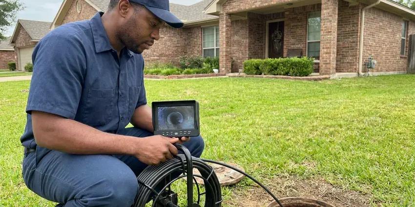

Leak Detection in Cincinnati, OH
Leak detection in Cincinnati, OH without opening walls on a hunch. We confirm, isolate, then mark.
- Insurance-Ready Paperwork
- Smaller Repair Holes
- Acoustic Locating
- Local Licensed Plumbers
Quit Paying for Water You Did Not Use in Cincinnati, OH
Call (740) 449-7505. We can usually book you within a day.
Leak Detection in Cincinnati, OH for Walls, Slabs, Yards and Fixtures
HRL Plumbing checks your whole system in Cincinnati, from the meter and service line to the slab, walls, irrigation and fixtures. We start simple. A toilet dye test and a meter check rule out the easy leaks before we bring out the ground microphone, which keeps the visit short and the bill fair.
Some of what we do:
- Thermal scans of walls and ceilings
- Hidden pinhole leaks inside walls
- Combustible gas leak locating

Additional Plumbing Maintenance Services in Cincinnati, OH
Our maintenance and specialty plumbing services in Cincinnati, OH protect your home year-round and extend the life of every system.


Customers
Why Choose HRL Plumbing for Leak Detection in Cincinnati, OH?
Holes cut in the wrong place cost twice, once for the hole and once for the patch. That is what we prevent. Two separate methods confirm the location before marking it, usually an acoustic reading backed by a thermal scan or a tracer gas hit on the same spot.
- Lower Bills, You see the savings on your next water bill, often within one cycle.
- Less Damage, Finding it early saves the subfloor and drywall in your Cincinnati home.
- Mold Prevention, Mold grows fast in a wet wall cavity, so we find it before that starts.
Citywide Coverage
Our leak detection techs work in every part of Cincinnati, from older homes with galvanized service lines to new builds plumbed in PEX. Every truck carries a full kit. Appointments are usually available within a day, and same-day slots open up often.
Experienced Team
Our leak detection techs train each year on the newest acoustic and thermal gear, since reading a ground microphone well takes real practice. It is a skill. They know how Ohio homes are typically plumbed.
Safety-First Approach
We call 811 before excavating any outdoor leak, which gets buried utilities marked first. That prevents accidents. Repairs are pressure tested before we backfill or close up a wall.
Trusted Certified Cincinnati Plumbing Services Professionals
At HRL Plumbing, we take pride in licensed, certified plumbing services throughout Cincinnati, OH. Credentials matter in this trade. Every repair, install and maintenance visit follows strict safety and quality rules, and the plumbers doing the work carry recognized industry credentials.
Call Us Now PHCC Plumbing Contractor Recognition
PHCC Plumbing Contractor Recognition Better Business Bureau (BBB) Accreditation
Better Business Bureau (BBB) Accreditation Angi Certified Pro
Angi Certified Pro ISO 9001 Quality Management Certification
ISO 9001 Quality Management CertificationWalls, Slabs and Yards: Leak Detection in Cincinnati, OH
Leak Testing for Multifamily and Offices in Cincinnati
Multifamily buildings and office parks have long supply systems that let leaks hide for months. We isolate each unit or floor, test it and trace leaks with the same acoustic and thermal tools we use in single-family houses. Every unit gets its own report. Catching leaks early cuts tenant complaints and insurance claims across the building.

Slab Leak Detection in Cincinnati
Concrete slab homes have supply lines buried in sand below the floor, and a pinhole there can run for months before anyone notices. A warm tile is the classic sign. We pressure test the hot and cold sides separately, then listen through the slab with a ground microphone and confirm with a thermal camera when the leak is on the hot side.
Underground Water Line Leak Detection in Cincinnati, OH
The buried line from your meter to the house can leak for months without surfacing, especially in old galvanized pipe. A green stripe in a dry yard is a hint. We trace the line with an electronic locator, then use a ground microphone to hear the leak, switching to tracer gas on plastic lines that do not carry sound.
PEX and Copper Leak Detection in Cincinnati, OH
On a ground microphone, copper leaks are easy to hear. PEX is quieter, since plastic pipe does not carry sound well, so we lean more on thermal scans, moisture readings and tracer gas when the house is plumbed in it. Both show up on our schedule every week. Pinholes in copper and failed crimp fittings in PEX top the list of what we find.
Pool Leak Detection in Cincinnati
A pool losing more than a quarter inch a day beyond evaporation likely has a leak somewhere. We start with a bucket test. Then we pressure test the suction and return lines, use an underwater hydrophone to listen, and dye test around the skimmer, lights and main drain to find the exact crack or fitting that is losing water.
Commercial Leak Detection in Cincinnati
In Cincinnati, a commercial building has long supply runs where a leak can hide behind finished walls for a long time. We test zone by zone. Our techs isolate risers, mains and fire lines with pressure gauges, then locate leaks with acoustic and thermal tools, working after hours when tenants or customers would otherwise be in the way.
Preventive Leak Inspections in Cincinnati, OH
Checking for leaks once a year catches the small stuff. We test static pressure, read the meter with everything off and look at supply lines, water heater fittings and shutoff valves. Older homes with galvanized pipe or original water heater connectors benefit most from a yearly check, because those parts often fail together. It is a short visit.

Hidden Wall and Ceiling Leaks in Cincinnati
Bubbling paint, soft drywall and a musty smell are the signs we hear about most. All of them mean water. A thermal scan shows the wet patch, and a moisture meter confirms it. Acoustic tools help when the leak is on a pressurized line, and once the source is pinned down we cut a single neat access opening instead of chasing the stain across the wall.
Local Leak Detection in Cincinnati, OH
Need a leak found near you? HRL Plumbing loads every detection tool on the truck for the first visit, so we do not have to come back with the right equipment. One trip is usually enough in Cincinnati.
Being local means short drive times and quick follow-ups. After we mark the leak in your Cincinnati home, our plumbers can often repair it the same day, or book it for whenever suits your schedule.
HRL Plumbing at a Glance
- Fully licensed plumbing team covering Cincinnati, OH
- 24/7 emergency service with same-day scheduling
- Clear written estimates, no hidden fees
- 4.9-star rated by 673+ Ohio customers
Cincinnati Map
Cincinnati Information
- Population
- 311,097
- Area codes
- 513/859/937
- Service area
- Cincinnati and communities within 40 miles
- Nearby
- Hamilton, Middletown, Kettering, Dayton
Mineral-heavy water, buried irrigation and long service lines all hide leaks, and finding the exact spot keeps water loss and repair costs down in Cincinnati, OH. Private wells serve many rural homes, and iron, sulfur and hardness are frequent issues that call for filtration or softening.
Expert Services
Call HRL Plumbing for reliable plumbing work done by licensed pros in Cincinnati, OH.
Our Specialized Plumbing Services in Cincinnati, OH
At HRL Plumbing, we handle the full list of plumbing services across Cincinnati, OH. We go from leak detection all the way to full system installations, for homes and commercial buildings, and we do it quickly at a fair price. Take a look at our core services below:


How We Find a Leak in Cincinnati, OH
We move from meter tests to precise locating so no wall or floor gets opened on a hunch.
Book a Visit
Call (740) 449-7505 to describe the problem. We set an appointment and quote the detection fee.
Inspect and Locate
We test each line and listen for the leak, using thermal scans to confirm.
Report and Plan
You see the marked spot and hear the repair plan, with an upfront price.
Frequently Asked Questions About Leak Detection in Cincinnati
A typical home in Cincinnati usually costs $150 to $450 to test, depending on system size and the number of areas tested. Pools run $250 to $500. We quote it first.
A water bill that climbs, a damp ceiling spot or the sound of water when nothing is on tends to point to a hidden leak. Mold is another sign. Do not wait on these, since they rarely fix themselves.
Keep static pressure under 80 PSI, with a regulator installed if the house lacks one. Swap out aging supply lines. Homes with repeated pinholes may be better off with a repipe of the worst sections.
Galvanized steel and polybutylene top the list in older homes, because they corrode or break down. Copper develops pinholes with age. PVC and PEX hold up better though fittings and bad installs can still leak.
One to three hours covers most homes, though a big house with a long yard line or a pool can run past that. Commercial jobs run longer. We give you a time estimate when we book.
Three things: read the meter with everything off, put food coloring in each toilet tank and look for damp spots under sinks. Slab and wall leaks need equipment. That is where we come in.
Coverage depends on your policy. Plenty of policies pay for sudden leaks and sometimes the detection, especially when the search leads to a covered repair of the pipe. Ask your agent.
Over time, yes. Scale builds up inside pipes and fittings, and the chemistry behind it can wear down copper from the inside over a decade or two. That often leads to pinholes.
What People Are Saying About Our Plumbing Experts?

Brian W.
I smelled gas behind the dryer and called right away. The plumber found a corroded flex connector, replaced it, and pressure tested the whole line before turning the gas back on. He let me watch the gauge hold steady for fifteen minutes.
Gas Line Repair · Dayton, OH
Nathan E.
Our tankless heater kept throwing an error code and shutting off mid shower. The tech flushed the heat exchanger, which was full of scale, and replaced a bad flow sensor. Hot water has been steady for half a year now.
Water Heater Repair · Middletown, OH
Patricia H.
We had a slab leak that two other companies could not find. HRL Plumbing located it in under an hour with a listening device. They rerouted the line through the attic instead of breaking up the floor, so we kept our kitchen tile.
Slab Leak Repair · Dublin, OHDaniel K.
A pipe burst in the garage ceiling at 11 at night. Someone answered on the second ring, and the plumber was in my driveway about fifty minutes later. He shut off the main, cut out the split section, and had water back on before 2 am.
Emergency Plumbing · Kettering, OH
Jessica T.
We were adding a gas range in a kitchen remodel and needed a new line run from the meter. The plumber pulled the permit, ran the pipe through the crawl space, and had it inspected and approved within the week.
Gas Line Repair · Hamilton, OHCarlos V.
Our house still had galvanized pipe, and upstairs the shower was a trickle. The crew repiped everything in PEX over three days and patched every drywall hole before they left. The pressure difference is night and day.
Repiping · Dublin, OH